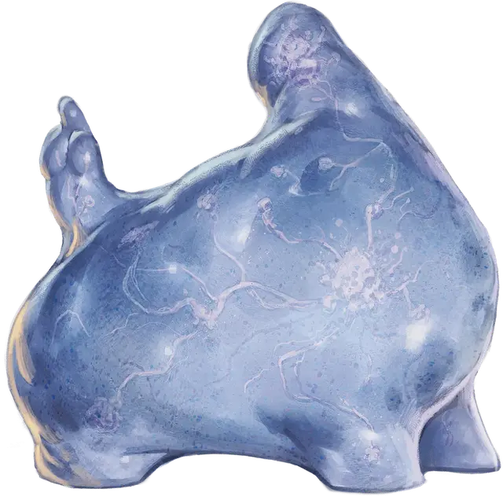

Шишка плазмоидов
Plasmoid Boss
Большая Слизь, любое мировоззрение

Класс Доспеха 11
Хиты 82 (11к10 + 22)
Скорость 30 футов
| мод | спас | ||
|---|---|---|---|
| СИЛ | 18 | +4 | +4 |
| ЛОВ | 12 | +1 | +1 |
| ТЕЛ | 14 | +2 | +4 |
| мод | спас | ||
|---|---|---|---|
| ИНТ | 14 | +2 | +2 |
| МДР | 13 | +1 | +3 |
| ХАР | 15 | +2 | +2 |
Навыки Запугивание +4, Обман +4, Убеждение +4
Сопротивление урону кислота, яд
Чувства тёмное зрение 60 футов, пассивное Восприятие 13
Языки Общий
Опасность 4 (1100 опыта)
Бонус мастерства +2
Особенности
Аморфный. Плазмоид можете протискиваться в узкое пространство шириной в 1 дюйм при условии, что ничего не несёт и не носит. Он совершает с преимуществом проверки характеристик если пытается схватить или избежать захвата.
Задержка дыхания. Плазмоид может задержать дыхание на 1 час.
Действия
Мультиатака. Плазмоид совершает три атаки Ложноножкой.
Ложноножка. . Рукопашная атака оружием: +6 к попаданию (с преимуществом, если рядом с ним в пределах 10 футов находятся один или несколько союзников), досягаемость 10 фт., одна цель. Попадание: 11 (2к6 + 4) дробящего урона.
Реакции
Невероятное уклонение. Плазмоид получает половину урона от попавшей по нему атаке. Плазмоид должен видеть атакующего.
Описание
Иногда, в силу некой биологической аномалии, плазмоид увеличивается в размерах по достижении зрелого возраста (около двадцати лет). Плазмоиды, использующие свои возросшие размеры и силу, чтобы командовать более мелкими и слабыми существами, могут легко оказаться у власти, окруженные верными подчинёнными, подхалимами и потенциальными узурпаторами. Шишка плазмоидов может стать хозяином гильдии, лидером преступной группировки, владыкой сообщества плазмоидов или капитаном магического корабля. Независимо от выбранной роли, шишкам плазмоидов, помимо силы и размеров, требуется немалое количество обаяния и остроумия, чтобы надолго удержаться у власти.
Плазмоиды
Плазмоиды — это разумная слизь, способная изменять свою форму по желанию. Их аморфные тела имеют мягкую пластичную структуру. Плазмоиды могут выпускать до пяти ложноножек, каждая из которых достигает 5 футов в длину. Они используют их для передвижения, а также для управления объектами.
У каждого плазмоида есть мозг в виде сгустка нервов. У плазмоидов нет внутренних органов в привычном для человека понимании, но есть поры, через которые они поглощают кислород. Четыре раза в своей жизни плазмоид может воспроизводиться, соединяясь с другим представителем своего вида. После этого слияния два плазмоида разделяются, и один из них, выбранный случайным образом, делится пополам. Когда плазмоид делится, одно из получившихся существ становится оригиналом, а другое — физическим дубликатом, лишенным опыта и знаний своего родителя.
Плазмоид разговаривает, прогоняя воздух через трубчатые полости в своем теле, что придает его голосу свистящий характер.